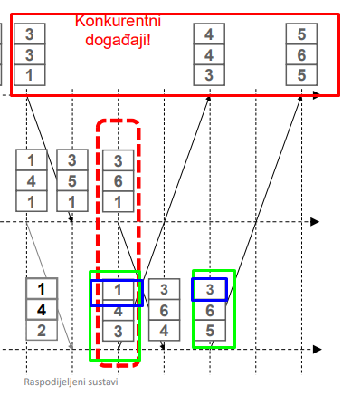

RogerRoger

recimo da sortiras ocitanja u senzoru 1 i imas ova 3 (u crvenom kvadratu)
prvo ocitanje je taj senzor generirao i njegova oznaka je 3
drugo ocitanje koje je primljeno ima dolazi sa vektorom (1,4,3). ti od toga uzimas oznaku za prvi senzor (1) i gledas jel ta oznaka veca il manja od oznake u generiranom ocitanju.
u ovom slucaju oznaka 1 je manja od 3, iako je ocitanje generirano kasnije. senzor 1 misli da je ocitanje generirano ranije (zbog oznake) i stavit ce ga prvog u listu.
sljedece ocitanje koje mora sortirat je sa vektorom (3,6,5).
to ocitanje ima istu vrijednost (oznaceno plavom) kao i vrijednost senzora 1 (3), pa ces to stavit nakon vlastito generiranog ocitanja.
nadam se da ti je jasno sad, ja sam se isto borio da shvatim sve to